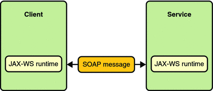

Creating a Simple Web Service and Client with JAX-WS
This section shows how to build and deploy a simple web service and client. The source code for the service is in tut-install/javaeetutorial5/examples/jaxws/helloservice/ and the client is in tut-install/javaeetutorial5/examples/jaxws/simpleclient/.
Figure 16-1 illustrates how JAX-WS technology manages communication between a web service and client.
Figure 16-1 Communication between a JAX-WS Web Service and a Client
The starting point for developing a JAX-WS web service is a Java class annotated with the javax.jws.WebService annotation. The @WebService annotation defines the class as a web service endpoint.
A service endpoint interface or service endpoint implementation (SEI) is a Java interface or class, respectively, that declares the methods that a client can invoke on the service. An interface is not required when building a JAX-WS endpoint. The web service implementation class implicitly defines an SEI.
You may specify an explicit interface by adding the endpointInterface element to the @WebService annotation in the implementation class. You must then provide an interface that defines the public methods made available in the endpoint implementation class.
You use the endpoint implementation class and the wsgen tool to generate the web service artifacts that connect a web service client to the JAX-WS runtime. For reference documentation on wsgen, see the Sun Java System Application Server 9.1 Reference Manual.
Together, the wsgen tool and the Application Server provide the Application Server’s implementation of JAX-WS.
These are the basic steps for creating the web service and client:
Code the implementation class.
Compile the implementation class.
Use wsgen to generate the artifacts required to deploy the service.
Package the files into a WAR file.
Deploy the WAR file. The web service artifacts (which are used to communicate with clients) are generated by the Application Server during deployment.
Code the client class.
Use wsimport to generate and compile the web service artifacts needed to connect to the service.
Compile the client class.
Run the client.
The sections that follow cover these steps in greater detail.
Requirements of a JAX-WS Endpoint
JAX-WS endpoints must follow these requirements:
The implementing class must be annotated with either the javax.jws.WebService or javax.jws.WebServiceProvider annotation.
The implementing class may explicitly reference an SEI through the endpointInterface element of the @WebService annotation, but is not required to do so. If no endpointInterface is specified in @WebService, an SEI is implicitly defined for the implementing class.
The business methods of the implementing class must be public, and must not be declared static or final.
Business methods that are exposed to web service clients must be annotated with javax.jws.WebMethod.
Business methods that are exposed to web service clients must have JAXB-compatible parameters and return types. See Default Data Type Bindings.
The implementing class must not be declared final and must not be abstract.
The implementing class must have a default public constructor.
The implementing class must not define the finalize method.
The implementing class may use the javax.annotation.PostConstruct or javax.annotation.PreDestroy annotations on its methods for life cycle event callbacks.
The @PostConstruct method is called by the container before the implementing class begins responding to web service clients.
The @PreDestroy method is called by the container before the endpoint is removed from operation.
Coding the Service Endpoint Implementation Class
In this example, the implementation class, Hello, is annotated as a web service endpoint using the @WebService annotation. Hello declares a single method named sayHello, annotated with the @WebMethod annotation. @WebMethod exposes the annotated method to web service clients. sayHello returns a greeting to the client, using the name passed to sayHello to compose the greeting. The implementation class also must define a default, public, no-argument constructor.
package helloservice.endpoint;
import javax.jws.WebService;
@WebService
public class Hello {
private String message = new String("Hello, ");
public void Hello() {}
@WebMethod
public String sayHello(String name) {
return message + name + ".";
}
}
Building, Packaging, and Deploying the Service
You can build, package, and deploy the helloservice application using either NetBeans IDE or ant.
Building, Packaging, and Deploying the Service Using NetBeans IDE
Follow these instructions to build, package, and deploy the helloservice example to your Application Server instance using the NetBeans IDE IDE.
In NetBeans IDE, select File→Open Project.
In the Open Project dialog, navigate to tut-install/javaeetutorial5/examples/jaxws/.
Select the helloservice folder.
Select the Open as Main Project check box.
Click Open Project.
In the Projects tab, right-click the helloservice project and select Undeploy and Deploy.
This builds and packages to application into helloservice.war, located in tut-install/javaeetutorial5/examples/jaxws/helloservice/dist/, and deploys this WAR file to your Application Server instance.
Building, Packaging, and Deploying the Service Using Ant
To build and package helloservice using Ant, in a terminal window, go to the tut-install/javaeetutorial5/examples/jaxws/helloservice/ directory and type the following:
ant
This command calls the default target, which builds and packages the application into an WAR file, helloservice.war, located in the dist directory.
To deploy the helloservice example, follow these steps:
In a terminal window, go to tut-install/javaeetutorial5/examples/jaxws/helloservice/.
Make sure the Application Server is started.
Run ant deploy.
You can view the WSDL file of the deployed service by requesting the URL http://localhost:8080/helloservice/hello?WSDL in a web browser. Now you are ready to create a client that accesses this service.
Undeploying the Service
At this point in the tutorial, do not undeploy the service. When you are finished with this example, you can undeploy the service by typing this command:
ant undeploy
The all Task
As a convenience, the all task will build, package, and deploy the application. To do this, enter the following command:
ant all
Testing the Service without a Client
The Application Server Admin Console allows you to test the methods of a web service endpoint. To test the sayHello method of HelloService, do the following:
Open the Admin Console by typing the following URL in a web browser:
http://localhost:4848/
Enter the admin user name and password to log in to the Admin Console.
Click Web Services in the left pane of the Admin Console.
Click Hello.
Click Test.
Under Methods, enter a name as the parameter to the sayHello method.
Click the sayHello button.
This will take you to the sayHello Method invocation page.
Under Method returned, you’ll see the response from the endpoint.
A Simple JAX-WS Client
HelloClient is a stand-alone Java program that accesses the sayHello method of HelloService. It makes this call through a port, a local object that acts as a proxy for the remote service. The port is created at development time by the wsimport tool, which generates JAX-WS portable artifacts based on a WSDL file.
Coding the Client
When invoking the remote methods on the port, the client performs these steps:
Uses the javax.xml.ws.WebServiceRef annotation to declare a reference to a web service. @WebServiceRef uses the wsdlLocation element to specify the URI of the deployed service’s WSDL file.
@WebServiceRef(wsdlLocation="http://localhost:8080/helloservice/hello?wsdl") static HelloService service;
Retrieves a proxy to the service, also known as a port, by invoking getHelloPort on the service.
Hello port = service.getHelloPort();
The port implements the SEI defined by the service.
Invokes the port’s sayHello method, passing to the service a name.
String response = port.sayHello(name);
Here is the full source of HelloClient, which is located in the tut-install/javaeetutorial5/examples/jaxws/simpleclient/src/java/ directory.
package simpleclient;
import javax.xml.ws.WebServiceRef;
import helloservice.endpoint.HelloService;
import helloservice.endpoint.Hello;
public class HelloClient {
@WebServiceRef(wsdlLocation="http://localhost:8080/
helloservice/hello?wsdl")
static HelloService service;
public static void main(String[] args) {
try {
HelloClient client = new HelloClient();
client.doTest(args);
} catch(Exception e) {
e.printStackTrace();
}
}
public void doTest(String[] args) {
try {
System.out.println("Retrieving the port from
the following service: " + service);
Hello port = service.getHelloPort();
System.out.println("Invoking the sayHello operation
on the port.");
String name;
if (args.length > 0) {
name = args[0];
} else {
name = "No Name";
}
String response = port.sayHello(name);
System.out.println(response);
} catch(Exception e) {
e.printStackTrace();
}
}
}
Building and Running the Client
You can build and run the simpleclient application using either NetBeans IDE or ant. To build the client, you must first have deployed helloservice, as described in Building, Packaging, and Deploying the Service.
Building and Running the Client in NetBeans IDE
Do the following to build and run simpleclient:
In NetBeans IDE, select File→Open Project.
In the Open Project dialog, navigate to tut-install/javaeetutorial5/examples/jaxws/.
Select the simpleclient folder.
Select the Open as Main Project check box.
Click Open Project.
In the Projects tab, right-click the simpleclient project and select Run.
You will see the output of the application client in the Output pane.
Building and Running the Client Using Ant
In a terminal navigate to tut-install/examples/jaxws/simpleclient/ and type the following command:
ant
This command calls the default target, which builds and packages the application into a JAR file, simpleclient.jar, located in the dist directory.
The run the client, type the following command:
ant run